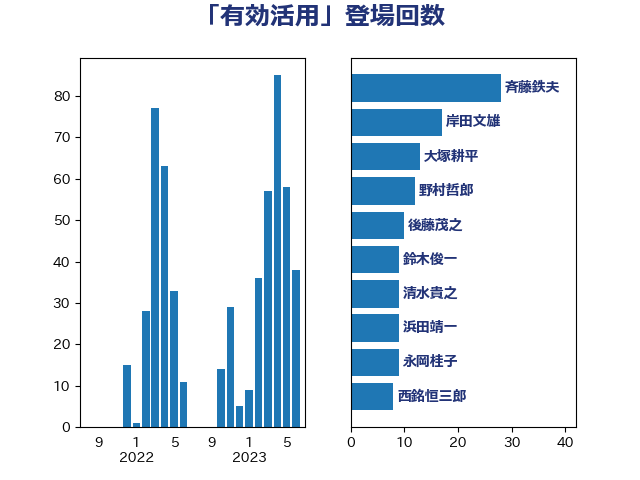

単語「有効活用」

| 斉藤鉄夫 | 公明党 | 28 回 |
| 岸田文雄 | 自由民主党 | 17 回 |
| 大塚耕平 | 国民民主党 | 13 回 |
| 野村哲郎 | 自由民主党 | 12 回 |
| 後藤茂之 | 自由民主党 | 10 回 |
| 鈴木俊一 | 自由民主党 | 9 回 |
| 清水貴之 | 日本維新の会 | 9 回 |
| 浜田靖一 | 自由民主党 | 9 回 |
| 永岡桂子 | 自由民主党 | 9 回 |
| 西銘恒三郎 | 自由民主党 | 8 回 |
| 末次精一 | 立憲民主党 | 7 回 |
| 萩生田光一 | 自由民主党 | 5 回 |
| 沢田良 | 日本維新の会 | 5 回 |
| 大西健介 | 立憲民主党 | 5 回 |
| 下野六太 | 公明党 | 5 回 |
| 藤木眞也 | 自由民主党 | 4 回 |
| 浜口誠 | 国民民主党 | 4 回 |
| 柴田巧 | 日本維新の会 | 4 回 |
| 末松信介 | 自由民主党 | 4 回 |
| 小熊慎司 | 立憲民主党 | 4 回 |
| 加藤勝信 | 自由民主党 | 4 回 |
| 階猛 | 立憲民主党 | 3 回 |
| 西村明宏 | 自由民主党 | 3 回 |
| 篠原孝 | 立憲民主党 | 3 回 |
| 福重隆浩 | 公明党 | 3 回 |
| 田村まみ | 国民民主党 | 3 回 |
| 田名部匡代 | 立憲民主党 | 3 回 |
| 河野太郎 | 自由民主党 | 3 回 |
| 横沢高徳 | 立憲民主党 | 3 回 |
| 柳ヶ瀬裕文 | 日本維新の会 | 3 回 |
| 松本剛明 | 自由民主党 | 3 回 |
| 川合孝典 | 国民民主党 | 3 回 |
| 島村大 | 自由民主党 | 3 回 |
| 宮崎勝 | 公明党 | 3 回 |
| 高橋はるみ | 自由民主党 | 2 回 |
| 長峯誠 | 自由民主党 | 2 回 |
| 遠藤良太 | 日本維新の会 | 2 回 |
| 逢坂誠二 | 立憲民主党 | 2 回 |
| 豊田俊郎 | 自由民主党 | 2 回 |
| 谷公一 | 自由民主党 | 2 回 |
| 西村康稔 | 自由民主党 | 2 回 |
| 若松謙維 | 公明党 | 2 回 |
| 羽田次郎 | 立憲民主党 | 2 回 |
| 細田健一 | 自由民主党 | 2 回 |
| 竹詰仁 | 国民民主党 | 2 回 |
| 空本誠喜 | 日本維新の会 | 2 回 |
| 神谷裕 | 立憲民主党 | 2 回 |
| 石垣のりこ | 立憲民主党 | 2 回 |
| 石井苗子 | 日本維新の会 | 2 回 |
| 比嘉奈津美 | 自由民主党 | 2 回 |
| 櫻井周 | 立憲民主党 | 2 回 |
| 榛葉賀津也 | 国民民主党 | 2 回 |
| 木村英子 | れいわ新選組 | 2 回 |
| 平林晃 | 公明党 | 2 回 |
| 川田龍平 | 立憲民主党 | 2 回 |
| 山本香苗 | 公明党 | 2 回 |
| 小野泰輔 | 日本維新の会 | 2 回 |
| 小沢雅仁 | 立憲民主党 | 2 回 |
| 宮崎雅夫 | 自由民主党 | 2 回 |
| 国定勇人 | 自由民主党 | 2 回 |
| 古川元久 | 国民民主党 | 2 回 |
| 中川康洋 | 公明党 | 2 回 |
| 高階恵美子 | 自由民主党 | 1 回 |
| 高橋千鶴子 | 日本共産党 | 1 回 |
| 高橋光男 | 公明党 | 1 回 |
| 高木真理 | 立憲民主党 | 1 回 |
| 高木かおり | 日本維新の会 | 1 回 |
| 青木愛 | 立憲民主党 | 1 回 |
| 青山大人 | 立憲民主党 | 1 回 |
| 阿部司 | 日本維新の会 | 1 回 |
| 長友慎治 | 国民民主党 | 1 回 |
| 鈴木敦 | 国民民主党 | 1 回 |
| 金子恵美 | 立憲民主党 | 1 回 |
| 野間健 | 立憲民主党 | 1 回 |
| 野田聖子 | 自由民主党 | 1 回 |
| 野田国義 | 立憲民主党 | 1 回 |
| 野中厚 | 自由民主党 | 1 回 |
| 重徳和彦 | 立憲民主党 | 1 回 |
| 近藤昭一 | 立憲民主党 | 1 回 |
| 近藤和也 | 立憲民主党 | 1 回 |
| 輿水恵一 | 公明党 | 1 回 |
| 足立敏之 | 自由民主党 | 1 回 |
| 赤木正幸 | 日本維新の会 | 1 回 |
| 谷田川元 | 立憲民主党 | 1 回 |
| 西岡秀子 | 国民民主党 | 1 回 |
| 藤巻健太 | 日本維新の会 | 1 回 |
| 蓮舫 | 立憲民主党 | 1 回 |
| 芳賀道也 | 国民民主党 | 1 回 |
| 舞立昇治 | 自由民主党 | 1 回 |
| 羽生田俊 | 自由民主党 | 1 回 |
| 笹川博義 | 自由民主党 | 1 回 |
| 穂坂泰 | 自由民主党 | 1 回 |
| 福島伸享 | 無所属 | 1 回 |
| 福岡資麿 | 自由民主党 | 1 回 |
| 神津たけし | 立憲民主党 | 1 回 |
| 石井正弘 | 自由民主党 | 1 回 |
| 石井拓 | 自由民主党 | 1 回 |
| 矢倉克夫 | 公明党 | 1 回 |
| 田村貴昭 | 日本共産党 | 1 回 |
| 田嶋要 | 立憲民主党 | 1 回 |
| 牧原秀樹 | 自由民主党 | 1 回 |
| 熊田裕通 | 自由民主党 | 1 回 |
| 渡辺猛之 | 自由民主党 | 1 回 |
| 渡辺博道 | 自由民主党 | 1 回 |
| 浅野哲 | 国民民主党 | 1 回 |
| 浅川義治 | 日本維新の会 | 1 回 |
| 武部新 | 自由民主党 | 1 回 |
| 櫻井充 | 自由民主党 | 1 回 |
| 櫛渕万里 | れいわ新選組 | 1 回 |
| 森田俊和 | 立憲民主党 | 1 回 |
| 森山浩行 | 立憲民主党 | 1 回 |
| 梅村聡 | 日本維新の会 | 1 回 |
| 柴愼一 | 立憲民主党 | 1 回 |
| 枝野幸男 | 立憲民主党 | 1 回 |
| 林芳正 | 自由民主党 | 1 回 |
| 木村次郎 | 自由民主党 | 1 回 |
| 日下正喜 | 公明党 | 1 回 |
| 斎藤洋明 | 自由民主党 | 1 回 |
| 掘井健智 | 日本維新の会 | 1 回 |
| 打越さく良 | 立憲民主党 | 1 回 |
| 庄子賢一 | 公明党 | 1 回 |
| 平山佐知子 | 無所属 | 1 回 |
| 市村浩一郎 | 日本維新の会 | 1 回 |
| 岬麻紀 | 日本維新の会 | 1 回 |
| 岩田和親 | 自由民主党 | 1 回 |
| 岩渕友 | 日本共産党 | 1 回 |
| 岡田直樹 | 自由民主党 | 1 回 |
| 岡本あき子 | 立憲民主党 | 1 回 |
| 山際大志郎 | 自由民主党 | 1 回 |
| 山本太郎 | れいわ新選組 | 1 回 |
| 山本剛正 | 日本維新の会 | 1 回 |
| 山本佐知子 | 自由民主党 | 1 回 |
| 山崎誠 | 立憲民主党 | 1 回 |
| 山井和則 | 立憲民主党 | 1 回 |
| 山下雄平 | 自由民主党 | 1 回 |
| 小林鷹之 | 自由民主党 | 1 回 |
| 小林一大 | 自由民主党 | 1 回 |
| 小川淳也 | 立憲民主党 | 1 回 |
| 小倉將信 | 自由民主党 | 1 回 |
| 寺田稔 | 自由民主党 | 1 回 |
| 宮口治子 | 立憲民主党 | 1 回 |
| 宗清皇一 | 自由民主党 | 1 回 |
| 太田房江 | 自由民主党 | 1 回 |
| 太栄志 | 立憲民主党 | 1 回 |
| 大家敏志 | 自由民主党 | 1 回 |
| 堤かなめ | 立憲民主党 | 1 回 |
| 堀内詔子 | 自由民主党 | 1 回 |
| 城井崇 | 立憲民主党 | 1 回 |
| 吉良州司 | 無所属 | 1 回 |
| 吉田宣弘 | 公明党 | 1 回 |
| 吉田とも代 | 日本維新の会 | 1 回 |
| 古川俊治 | 自由民主党 | 1 回 |
| 勝目康 | 自由民主党 | 1 回 |
| 佐藤英道 | 公明党 | 1 回 |
| 伴野豊 | 立憲民主党 | 1 回 |
| 伊藤俊輔 | 立憲民主党 | 1 回 |
| 井野俊郎 | 自由民主党 | 1 回 |
| 井上貴博 | 自由民主党 | 1 回 |
| 五十嵐清 | 自由民主党 | 1 回 |
| 中川郁子 | 自由民主党 | 1 回 |
| 中司宏 | 日本維新の会 | 1 回 |
| 三浦信祐 | 公明党 | 1 回 |
| 三宅伸吾 | 自由民主党 | 1 回 |
| 三上えり | 立憲民主党 | 1 回 |
| たがや亮 | れいわ新選組 | 1 回 |